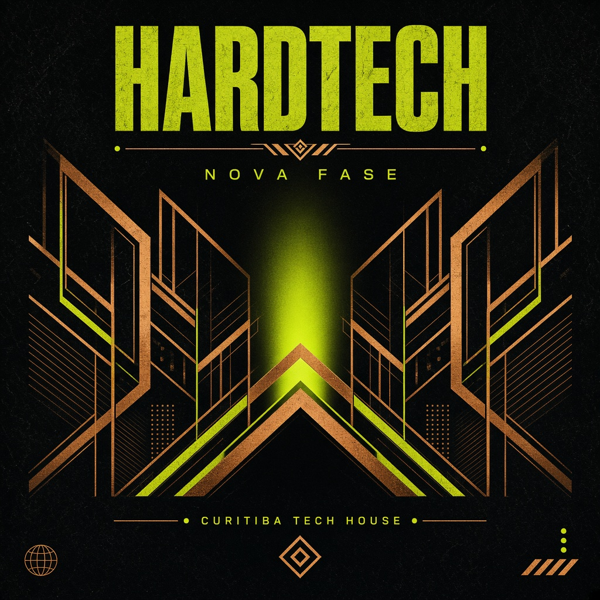

01
Autoral de verdade
Os sets anunciados como 100% autorais estão no SoundCloud. A pista ouve música feita no estúdio, não só um aquecimento de catálogo alheio.
Vinicius Mangini leva groove autoral da capital para a pista e para o selo. O trabalho é de estúdio, de back-to-back e de casa lotada.
Posicionamento
A bio pública define o ofício em uma linha: DJ, produtor, Tech House e groove. Os posts sustentam isso com lançamento, back-to-back e agradecimento a quem abre a casa.
01
Os sets anunciados como 100% autorais estão no SoundCloud. A pista ouve música feita no estúdio, não só um aquecimento de catálogo alheio.
02
Grande parte da discografia pública sai com @bullettimemusic. O duo é o núcleo criativo: EP, single e B2B.
03
Dacusan, Players, After Room, Savitar, Hotoven, Klexos, L90's e Last Standin' Monitors já publicaram faixa. A prova mora no Beatport e no post, não no adjetivo.
Na voz dele
“Saio de cabeça erguida e sentimento de dever cumprido. Sempre foi meu sonho tocar nesse palco.”
“Corpo primeiro. Pensamento depois.” O Bailão EP foi anunciado para mexer, não para agradar.
Agenda
Estreia com prata no Circuito do Park Art, sets na família Balance e noites no Secret Groove. O mapa separa gig confirmado de casa da cena.
Final do Circuito Park Live. Prata. Estúdio Mixar no agradecimento.
Set 100% autoral publicado no SoundCloud.
Back-to-back com Bullet Time.

LP em campanha
O nome vem da própria legenda da estreia no Park Art: o começo de muita coisa. A landing junta o que já está em selo e empurra o próximo capítulo para quem vive música eletrônica.